Glow-in-the-Dark
Bacteria Engineering Kit
Make Bacteria Glow with Jellyfish DNA.
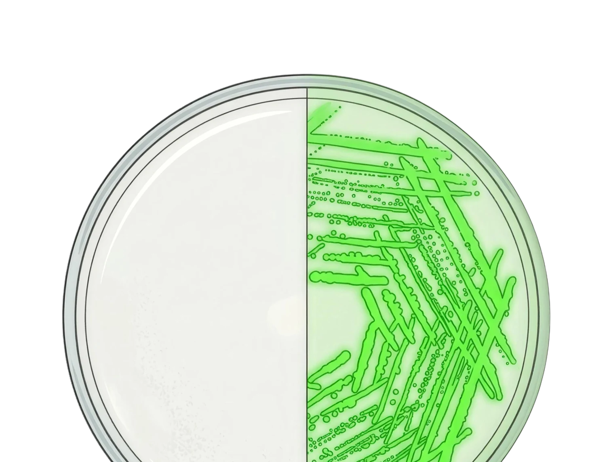
01
What You'll Do
In this experiment, you'll insert a gene from a jellyfish into
harmless E. coli bacteria.
That gene makes a protein called Green Fluorescent Protein
(GFP) – the same protein that makes jellyfish glow.
When you shine blue light on the bacteria through
the orange filter included in this kit, any bacteria that
successfully took up the gene will glow bright green.
This is called bacterial transformation, and it's one of
the most foundational techniques in genetic engineering.
02
Safety Notes
- The E. coli in this kit is non-pathogenic and non-
hazardous. It cannot make you sick. - Wear gloves when handling bacteria.
- Wash hands after the experiment.
- To dispose of bacteria: pour 5% bleach on any
plates, wait 10 minutes, then trash. - Keep your work area clean. Wipe surfaces with
rubbing alcohol before you start.
03
How It Works
Cells use DNA as an instruction manual for making proteins.
Every 3 letters of DNA code for one amino acid, and chains
of amino acids make proteins.
GFP is a protein that naturally fluoresces, it absorbs blue
light and emits green light.
The GFP gene is carried on a tiny circular piece of DNA
called a plasmid. We'll mix the bacteria with chemicals
that temporarily make their cell walls leaky, then add
the plasmid.
Some bacteria will absorb the plasmid and start producing
GFP. Only the transformed bacteria survive on our antibiotic
plates, which glow green in blue light.
GFP gene Bacteria Bacteria
glowing green
04
What's in the Kit
1. Equipment
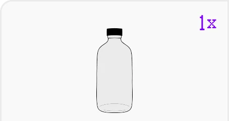
(for melting agar)
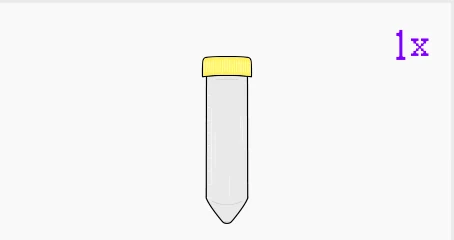
(for measuring water)
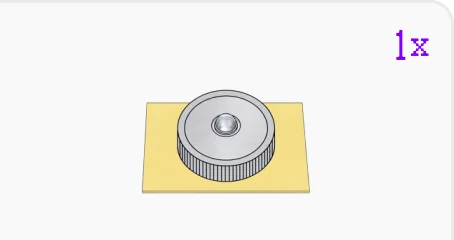
blue LED light
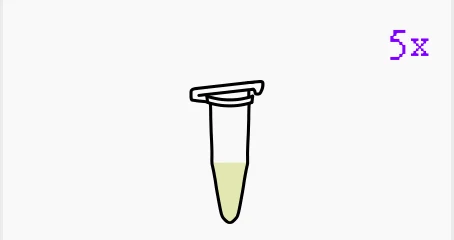
with LB broth
loops
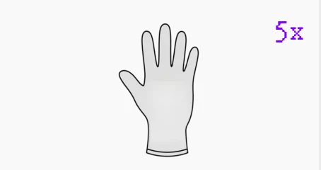
gloves
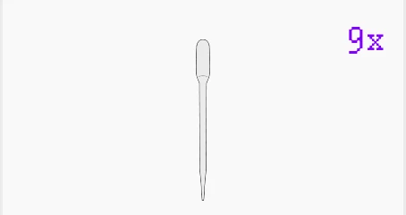
transfer pipettes
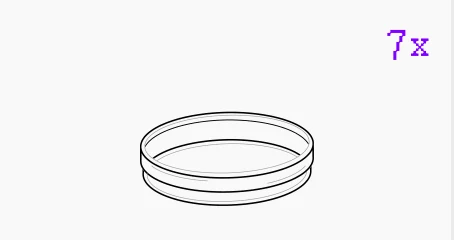
plates
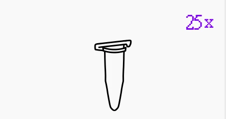
tubes
05
2. Perishables
(store in fridge on arrival)
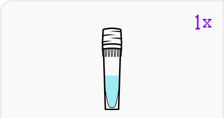
tube
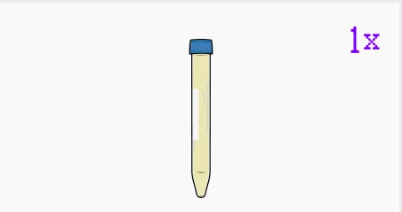
tube
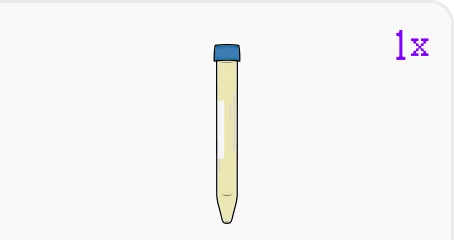
powder tube
transformation buffer
(CaCl₂ + PEG 8000)
3. Perishables
(store in freezer on arrival)
(jellyfish gene),
20 ng/µL
E. coli DH5a,
freeze dried
06
Timeline at a Glance
Day 1, Afternoon (~1 hour)
Make agar plates. Streak bacteria onto a plate.
Day 1, Evening
Let bacteria grow overnight (12-24 hours).
Day 2 (~2 hours)
Prepare competent cells, add plasmid, heat shock, plate.
Day 2-4
Wait for colonies to grow, then check for fluorescence.
07
Before You Start:
60-Second Video Guides
Before starting your experiment, check out these fast
60-second video protocols.
They walk you through every step of making agar plates,
from melting and pouring to cooling and storage, so you
can avoid common mistakes and set up your lab work for
success.
08
Make Agar Plates
Agar plates are solid nutrient surfaces for bacteria
to grow on.
You'll make two types: plain LB agar (for growing bacteria)
and LB + Kanamycin agar (antibiotic plates – only
transformed bacteria survive here).
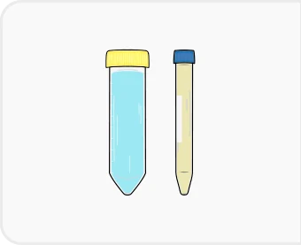
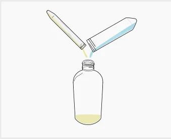
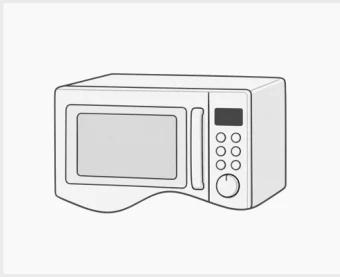
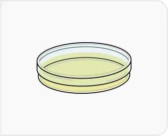
09
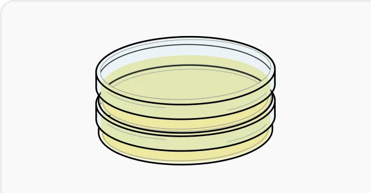
“LB Agar” and “LB + Kan Agar”
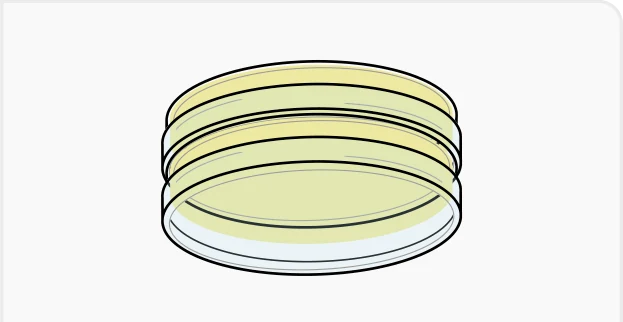
10
Prepare the Bacteria
Your E. coli arrives freeze-dried. You'll rehydrate it and
streak it onto a plain LB agar plate to grow a fresh colony
overnight.
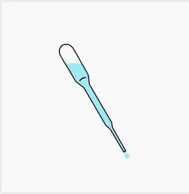
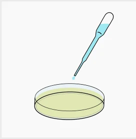
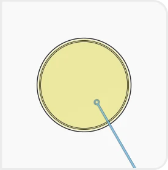
11
Warning:
- If your room is cold (below 18°C), bacteria may
take longer to grow – up to 24 hours.  Do not grow bacteria above 37°C. It damages the
Do not grow bacteria above 37°C. It damages the
bacteria and the experiment will fail. If agar solidifies in the bottle before you finish,
If agar solidifies in the bottle before you finish,
briefly re-microwave to liquefy it again.
12
Transformation:
Adding the GFP Gene
This is the main event. You'll mix bacteria with the
transformation buffer (which temporarily makes cell walls
porous), add the plasmid DNA, then heat shock the mixture
to drive the plasmid inside.
3.1 Prepare Competent Cells
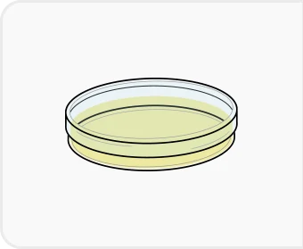
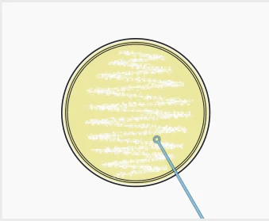
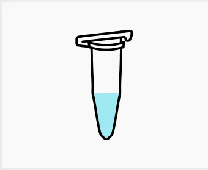
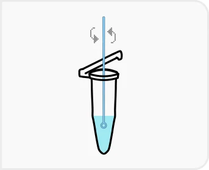
3.2 Add the Plasmid DNA
13
3.3 Cold Incubation
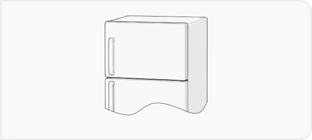
3.4 Heat Shock
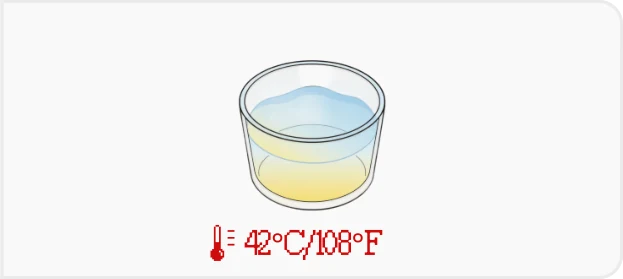
3.5 Recovery
14
3.6 Plate the Bacteria
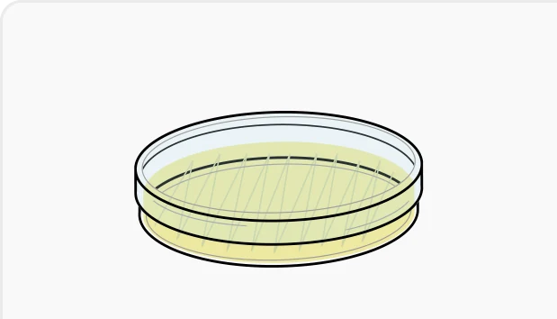
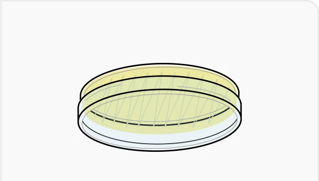
15
Check Your Results
After incubation, look for white or cream-colored dots on
the plate. These are bacterial colonies. Only transformed
bacteria survive on the antibiotic plate.
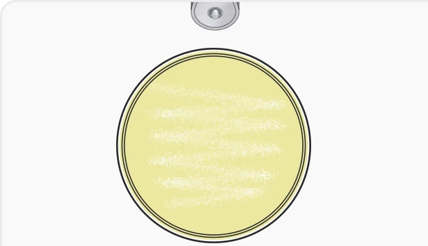
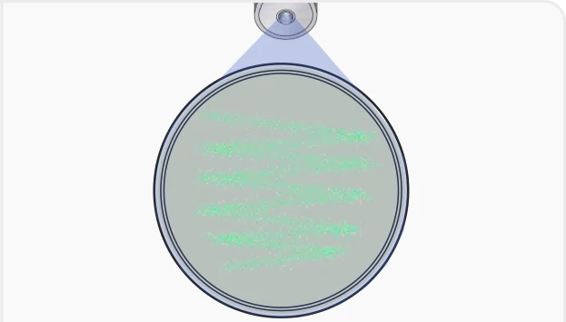
Success:
- Bright green glowing dots visible through
the orange filter. - If no colonies appear:
The agar plate may have been too hot when
bacteria were plated. Try again.  If colonies appear but don't glow:
If colonies appear but don't glow:
The plasmid may not have been taken up.
Retry with fresh bacteria.
16